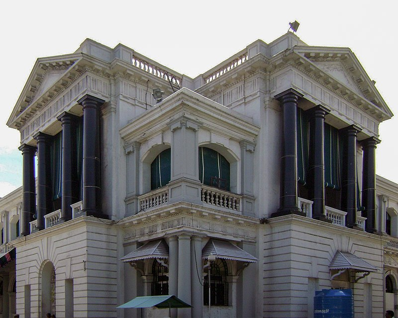
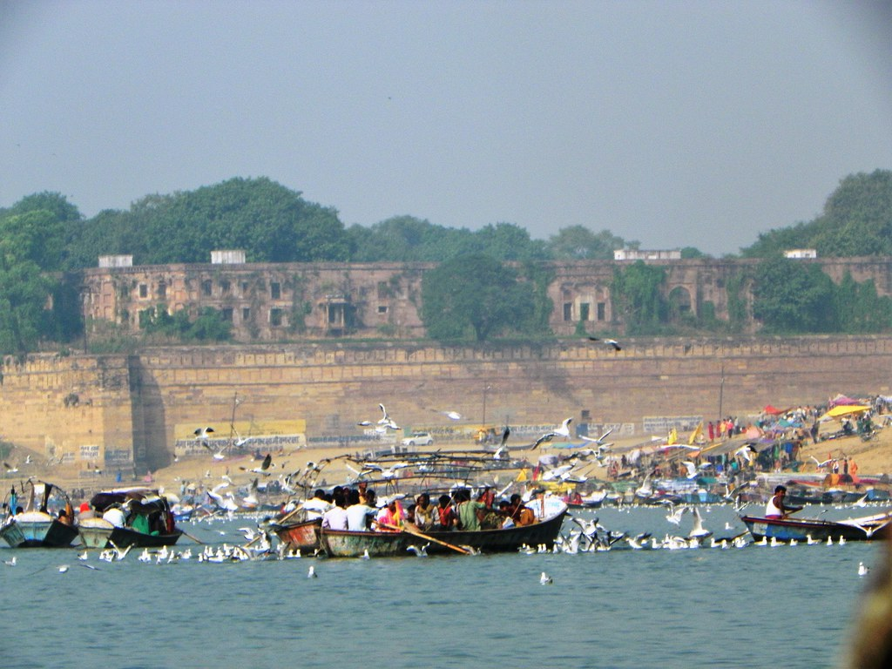
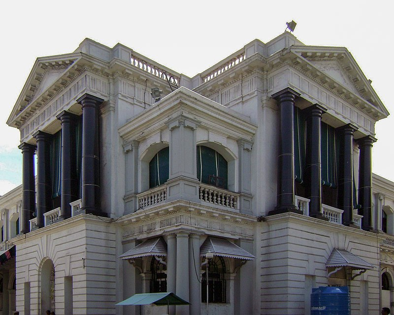
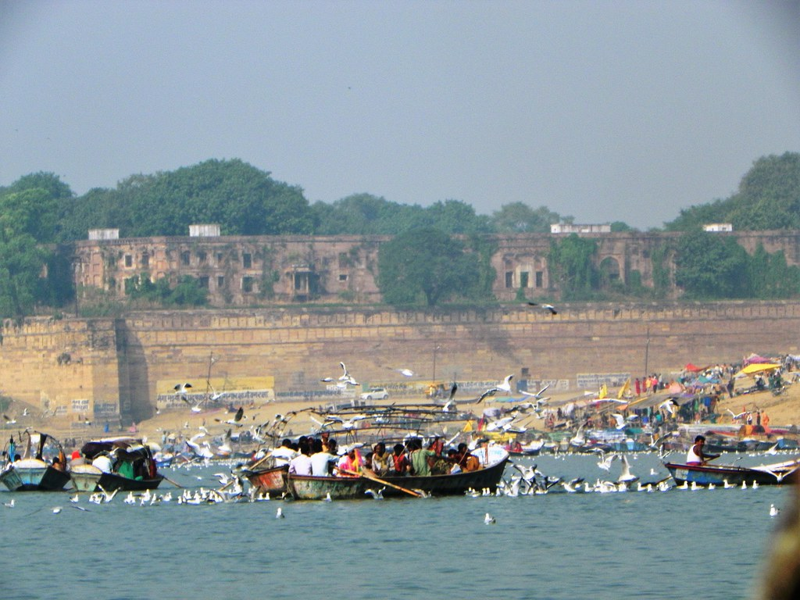

Organization of Indian Army
The troops are organized into 40 Divisions in 14 Corps. Army headquarters is located in the Indian capital,
New Delhi, and it is under the overall command of the Chief of Army Staff (COAS).

Organization of Indian Army
The troops are organized into 40 Divisions in 14 Corps. Army headquarters is located in the Indian capital,
New Delhi, and it is under the overall command of the Chief of Army Staff (COAS).
Command Structure
The army operates six operational commands and one training command. Each command is headed by General Officer Commanding-in-Chief with the rank of Lieutenant General. Each command directly reports to Army HQ in New Delhi. These commands are given below in order of creation, with location (city) and commanders listed. There is also the Army Training Command abbreviated ARTRAC. Besides these, army officers may head tri-service commands such as the Strategic Forces Command and Andaman and Nicobar Command, as well as institutions such as the Integrated Defence Staff.
Combat Arms
The Indian Territorial Army has battalions affiliated with different infantry regiments and some department units that are from the Corps of Engineers, Army Medical Corps, or the Army Service Corps. They serve as a part-time reserve. On 4 June 2017, the chief of staff announced that the Army was planning to open combat positions to women, who would first be appointed to positions in the military police.
Infantry
Upon its inception, the Indian Army inherited the British Army's organisational structure, which is still maintained today. Therefore, like its predecessor,
an Indian infantry regiment's responsibility is not to undertake field operations but to provide battalions and well-trained personnel to the field
formations. As such, it is common to find battalions of the same regiment spread across several brigades, divisions, corps, commands, and even theatres.
Like its British and Commonwealth counterparts, troops enlisted within the regiment are immensely loyal, take great pride in the regiment to which they
are assigned, and generally spend their entire career within the regiment.
Most Indian Army infantry regiments recruit based on certain selection criteria, such as region (for example, the
Assam Regiment), caste/community (Jat Regiment), or religion (Sikh Regiment). Most regiments continue the
heritage of regiments raised under the British Raj, but some have been raised after independence, some of which have
specialised in border defence, in particular the Ladakh Scouts, the Arunachal Scouts, and the Sikkim Scouts.
Over the years there have been fears that troops' allegiance lay more with their regiments and the
regions/castes/communities/religions from which they were recruited, as opposed to the Indian union as a whole.
Thus some "all India" or "all class" regiments have been created, which recruit troops from all over India, regardless of
region, caste, community, or religion: such as the Brigade of the Guards (which later converted to the Mechanised
Infantry profile) and the Parachute Regiment.
Recruitment and Training
Pre-commission training of Gentlemen Cadets is carried out at the Indian Military Academy at Dehradun and the Officers Training Academy at Chennai. There are also specialised training institutions such as the Army War College, at Mhow, Madhya Pradesh; the High Altitude Warfare School (HAWS), at Gulmarg, Jammu and Kashmir; the Counter Insurgency and Jungle Warfare School (CIJW), in Vairengte, Mizoram; and the College of Military Engineering (CME), in Pune. The Army Training Command (ARTRAC), at Shimla, supervises training of personnel. In 2020 a 'Tour of Duty' scheme was proposed for voluntary recruitment into the forces for civilians, to enable them to join for three years of short service. The scheme is on a trial basis and will start with a test group of 100 officers and 1000 jawans.
Intelligence
The Directorate of Military Intelligence (DMI) is an intelligence-gathering arm of the Indian Army. The MI (as it is commonly referred to) was constituted in 1941. It was initially created to check corruption in the Army's ranks. With time, its role has evolved into cross-border intelligence, intelligence sharing with friendly nations, infiltrating insurgent groups, and counter-terrorism. In the late 1970s, the MI was embroiled in the Samba spy scandal, wherein three Indian Army officers were falsely implicated as Pakistani spies. The organisation has since emerged from the scandal as a prime intelligence organisation of the Indian Army. As of 2012, the MI has seen many of its roles taken away by the newly created National Technical Research Organisation and the Defence Intelligence Agency. Since it was set up in 2004 as a premier scientific agency under the National Security Adviser in the Prime Minister's Office, it also includes the National Institute of Cryptology Research and Development (NICRD), which is the first of its kind in Asia.
Field Formations
Below are the basic field formations of the Indian Army:
Army Fort
Fort William, Kolkata: Garrison of Eastern Army Command
Fort St George, Chennai: Garrison of ATNK&K Army Area
OD Fort, Allahabad, Ordnance Depot
 



This Website is made for educational purpose only.
All the facts and data has been adopted from internet.